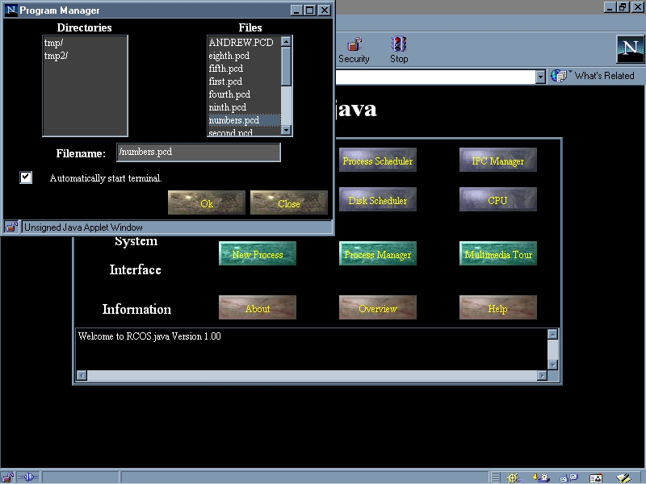
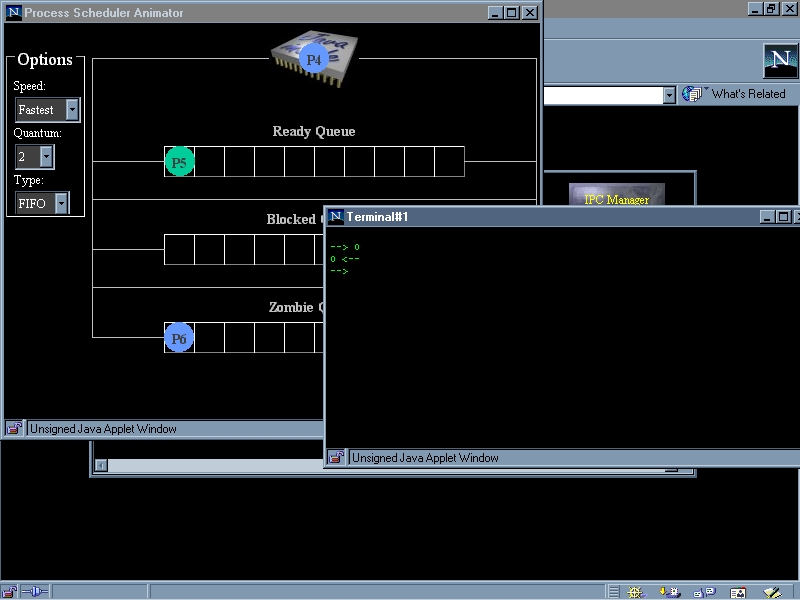
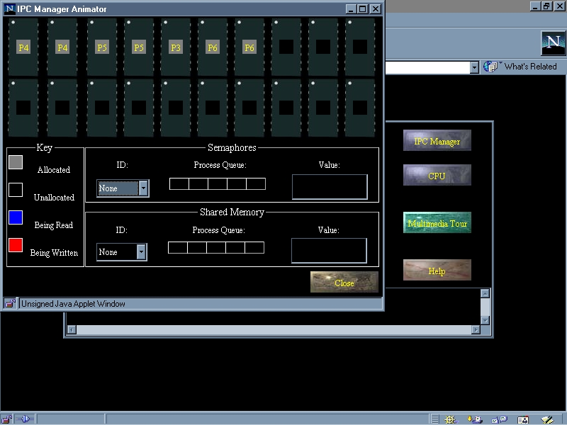

/ Papers / An Animated, Simulated Operation System in Java |
|
RCOS.java is a Java-based, simulated operating system which attempts to address these problems by providing students the opportunity to observe animations and to actively experiment with the algorithms, data structures and services of an operating system. A unique characteristic of RCOS.java is that it combines the features of previous operating systems courseware, animation (reference), concurrency simulation (reference) and toy operating systems (reference), into a single system with the features of Java and the World-Wide Web. Most importantly RCOS.java includes features which can be combined with appropriate pedagogy to offer support for active and discovery-based learning. RCOS.java builds on lessons gathered during the use and development of previous computer-aided learning systems at CQU [Chernich, Jamieson and Jones 1996, Chernich and Jones 1994] and from the literature.
This chapter describes the rationale, design, features and examples of how RCOS.java will be used to aid student understanding of operating system concepts. The chapter starts by describing the background, history and context which initiated and influenced the design and development of RCOS.java. It then moves on to offer possible explanations for the difficulty many students have when taking a unit in operating systems and a description of the approaches from the literature which have been used to address these problems. The remainder of the chapter deals with the design, implementation and use of RCOS.java. ......
Over 50% of CQU's students learn using a primarily print-based distance education approach. All CQU, distance, computing students are expected to have access to a Intel-based computer running a version of the Windows operating system. The software used in all CQU computing units is designed to run on that platform. Traditionally distance students rely on text books and print-based study guides as their sole source of learning.
On-campus students are learn via traditional on-campus delivery approaches including lectures and tutorials. The primary form of information distribution to on-campus students is in the form of either face-to-face lectures or through the use of video-conferencing. In some cases there can be up to four generally independent staff giving lectures in a unit at different campuses. Additionally, all campuses provide local tutors to provide small group support to students.
Relatively few CQU units, 85349 is one of them (http://infocom.cqu.edu.au/85349/) make use of the Web and other forms of online learning to supplement traditional on-campus and distance learning approaches. Applications of online learning include online assignment submission (Jones and Jamieson, 1997), CD-ROM mirrors of Web sites, online lectures and animations (Jones, 1999).
As with most other units at CQU the circumstances under which 85349 is taught has undergone massive change since 1994. This change, which has not been matched by corresponding changes in practice or infrastructure, has introduced a number or problems including increased complexity and workload.
The changes in 85349 include
The use of Minix was not a great success because of the steep learning curve in installing and becoming familiar with the system. While these problems could be minimised for on-campus students this could not be done for distance students. Distance students were responsible for installing Minix onto their computers with limited access to the instructor.
PRMS (Hayes et al, 1990) is a simulated operating system with graphical animation of some operating system data structures and algorithms which was written specifically for the MS-DOS platform. Whilst simpler to use PRMS suffered from a number of problems (Chernich and Jones, 1994). PRMS was limited to the simulation of process and simple resource management and while these are important concepts there are a number of other areas causing difficulty for students. Inconsistent design conventions, a high level of coupling between components, and insufficient documentation all contributed to making it difficult for students to modify PRMS which was seen as an important use of PRMS to aid student learning.
While the use of PRMS had accompanying problems the graphical animation of operating system data structures and algorithms, was seen as a useful learning tool, especially by distance students. Drawing on the lessons learnt during the use of PRMS and a wish list of desired features (Chernich and Jones, 1994) Ron Chernich's Operating System (RCOS) was built during 1993 with further development occurring during 1994.
RCOS is a portable, multi-tasking operating system (OS) designed to demonstrate general operating system principles through controlled animation, and to allow simple modification and experimentation with OS data structures and algorithms. The use of RCOS during 1995 and 1996 was a success with 74% of students agreeing that helped them understand operating system concepts with 28% believing it was too difficult to use.
Prior to the development of RCOS similar tools such as OSP (Kifer et al, 1992) and Nachos (Christopher et al, 1993) were considered for use. There were two primary reasons why these useful systems were not used:
The second feature was considered essential in order to provide assistance to distance students in understanding these concepts. Other features that were considered desireable included:
something about the use of stand alone animations
A large number of the concepts introduced in an operating systems units (e.g. processes and concurrency) are abstractions and are not easily understood (Tosten, 1993). Additionally many of these concepts, concurrency especially, are dynamic concepts which cannot be easily explained in a static medium such as print. While operating systems texts use images to illustrate concepts they do not entail the dynamic nature of operating systems abstractions (Tosten, 1993). Students find it easier to understand these concepts when they are grounded to visual objects.
more here from the other papers
Studies have shown that relatively few students reach an acceptable
level of achievement in science and mathematics [4] FROM (Mordechai 1998)
ALl of the following is also from Mordechai
a beginning CS student has no effective model of a computer the computer forms an accessible ontological reality
If misconceptions are essential to the construction of new knowledge [16], the lack of an effective, if flawed, model of a computer is a serious obstacle to learning CS.
Even if no effort is made to present a view of what is going on 'inside' the learners will form their own" [3] p285
[12], p 162 "attribute students' fragile knowledge of programming in considerable part to a lack of a metnal model of the computer...."
Help files and tutorials must explicityly address the construction of a model, and not limit themselves to behaviourist practices of the form 'to do X, follow these steps'
students find it difficult to build a mental model of the computer and operating system. Especially distance education students who are limited to print This section draws on the literature on teaching operating systems, computer science, science and distance education to describe the difficulties involved in teaching operating systems.
More general attempts have included computer-based learning, online learning, problem-based and other forms of constructivist learning.
Computer assisted learning (CAL) is becoming increasingly prominent in education and as a result is changing the face of teaching and learning. While the driving force behind such innovations is multifaceted, the desire to increase teaching efficiency (Davies & Crowther, 1995) and quality (Coopers & Lybrand et al., 1996) have generally been regarded as the major contributing factors.
Some (Reid, 1994) consider the process of developing CAL to be fraught with difficulties. Factors that may contribute to developmental difficulties include: lack of educationally sound examples on which to base development, departure of staff involved in development, the lengthy time of development and the high costs involved. Darby (1992) suggested developing software that can be used over a number of institutions as part of a =ECc ollaborative consortia=EE (p. 194) to alleviate the problem of high costs =2E Allen et al. (1996) consider the working relationship between develo pers and subject matter experts to be complex and a potential source of d ifficulty. If advantages of learning with CAL are to be realized, integr ation must be planned carefully (Wilss 1997).
It is essential that CAL programs are supported by a clear model of learning and teaching (Coopers & Lybrand et al., 1996) While these conditions may facilitate development of CAL programs, the actual process of development is complex and time consuming (Reid, 1994)
While early studies of CAI assessed through meta-analysis reported technology-based instruction to be at least as effective as traditional instruction (e.g. Kulik, Kulik & Cohen, 1980), the validity of the research has been queried (Reeves, 1993) and other commentators have debated the level of effectiveness (Clark, 1983; Sims, 1992). Even 10 years ago, Roblyer (1988:7) suggested: it is becoming more difficult to make a case for increased across-the-board implementation of CAI on the basis of research results. A review of past CAI uses indicates that effects on learning vary widely depending on product design and implementation, and that CAI may often not be as effective in raising student performance as other, less expensive non-traditional methods.
However, it is possible that the limited effectiveness has resulted from a poor understanding of the technology for interactive learning, rather than design integrity and that effectiveness will only be achieved when we fully understand the functionality and vagaries of the interactive technology itself (Sims ??).
Practitioners in the field of interactive technology are regularly faced with the dilemma of whether to commence development or wait for the next technological advance (Sims ??) A. W. (Tony) Bates, Technology, Open Learning and Distance Education, Routeledge, 1995
Benefits of pre-programed computer-based learning:
Limitations of pre-programmed computer-based learning
Pre-Programed CBL is heavily influenced by behaviourism and cognitive science, which reject any element of conscious will as a dominant element of human behaviour. p 193 The basic behavioural perspective is focused on external aspects of learning which include:
A survey was held at the Liverpool University [McDonough et al 1994] outlines these features of learning environments. Opinons from lecturers on the use Computer Based Training was taken. It found that computer based training is becoming more necessary as student/staff ratios become higher and as people require education but are unable to have face to face contact. However, nearly 70% of the lecturers who responded to the survey felt that they would not use computer based training because they were unfamiliar with the technology and that it was seen to be far too time consuming to develop.
Current technology is difficult to cost as:
This means cost data, from even a few years ago, can be very misleading. Good quality CBL is still quite expensive to produce. New instructional approaches with multimedia promise lower costs and greater flexiblity.
Online learning using the Internet and the Web when combined with appropriate pedagogies provides a number of advantages including (McCormack and Jones, 1997)
If "schools continue to emphasize the accumulation of information, continue to employ didactic instruction and continue to view the student as empty vessels, then students have no need for the...Internet" [Solway 1995, pp 17]. Traditional assignment structures need to be modified to enhance the learning process and use of the Internet as a resource. Assignments set to show how to solve a practical problem is far more motivating than doing one that will be forgotten next semester. The online environment can be used to support most forms of traditional teaching but it is also uniquely suited to a number of new approaches which may help improve learning outcomes. These new approaches include:
The concepts of limitless reuse and embedded sharing of objects is certainly a powerful idea [Nelson 1995] and would be one well harnessed. Another idea that Nelson has discussed is "deep intercomparison" and "transclusion". While mainly dealing with copyright, the reuse of documents within their original context made available through shared instancing is applicable to online education. Indeed, one of the requirements for good instructional media is to provide the context in which media exists. Transclusion can also be useful in solving many of the problems that instructors have with creating content for the medium. Existing packages of information that appear in reusable format could be used to create, recreate and enhance new courseware. Students could build on previous assignments creating a sense of continued development.
On-line learning can be used with group work and can be used to simulate “what if” situations. Rarely do you come across problems in isolation and group work is therefore very important.
There are increasing opportunities with these tools for teachers in higher education to develop learning environments which connect individual learners into virtual communities sharing a common learning goal as well as more traditional based instruction.
In one example [Shute et al 1994] a program teaching tool called Stat Lady was used instead of presenting material on paper. Curriculum, presentation style, examples and help were all kept the same. The researches predicted that students would react better, require greater procedural skill and more benefit made by higher aptitude students. This, however, seemed to ignore the benefits that reducing complicated steps and having them continually evaluated would have on slower learners.
Not only was enjoyment higher for all of those using Stat Lady, it also had superior ability in declarative knowledge instruction. According to the research “students may benefit from computerized learning when definitions and concepts are the outcome goal”.
As well as enabling communication in the process of learning, the environments enable the learners to share the resources and materials which become the product of the learning (oliver et al 1997).
It is now widely held that objectivist approaches suffer a number of weaknesses which decrease their educational effectiveness. For example, Confrey (1990) suggests that objectivist approaches require that the instructor, rather than students, are responsible for simplifying the contents of a knowledge domains. As a result the objectivist approaches present students with a simplified model of complex knowledge and deprive the students of the benefits gained by simplifying the knowledge domain.
In response to these perceived problems a number of alternative approaches have been identified including collaborative and constructivist learning. This section provides a brief overview of these theories of learning and the implications they have for teaching operating systems and the development of RCOS.java.
The constructivist group of theories place less emphasis on the sequence of instruction and more emphasis on the design of a learning environment. Central to the constructivist tradition of learning is the emphasis on the role of the learner in the creation of knowledge (Biggs, 1991). While there is a broad spectrum of approaches under the constructivist banner two common beliefs are that learning is an active process of constructing knowledge and that instruction is a process of supporting that construction rather than communicating knowledge (Duffy and Cunningham, 1996, p171).
Constructivism has a number of implications for teaching including a need to encourage students to plan and define their goals for learning based on their existing knowledge, since knowledge construction builds upon the student's existing knowledge (Ben-Ari, 1998). Teaching in a construcivist setting means providing students with the opportunity to examine their processes of thinking and problem solving and providing learning experiences that engage the learner. Constructivist based teaching techniques are supposed to be more successful than traditional techniques, because they explicitly address the inevitable process of knowledge construction (Ben-Ari, 1998).
In addition, real operating systems can be hard to use. An attempt by CQU to use the Minix (Tanenbaum, 1987) operating system resulted in many distance students not being able to install Minix let alone observe it in action (Chernich and Jones, 1994).
Kehoe (1998) reports on the mixed results found by investigations into the effectiveness of animations as a learning tool. While students report feeling that animations aid their understanding of algorithms (SBL93) there have been numerous reports showing both negative (or limited) (RBA90, PE91, SBL93, BCS96) and positive results (May89, MA91 LBS94). Unfortunately in the majority of cases the positive result for the animation was small and not statistically significant (Stasko 1997). Something about the no significant difference phenomenon.
A results of a study reported in Pane et al (1996) show little difference between dynamic and static presenations. This report (Pane, Corbet and Bonnie?? 1996) also suggests that dynamic presenations are not a panacea for instructional difficulty. They also found that even motiviated students did not take full advantage of the exploratory opportunities such systems provided and suggest that substantial guidance must be built into simulation environments.
The less than glowing conclusions about the effectiviness of animations may explain their lower than expected application. Stasko (1997) also suggests that technical requirements, computing availability and the time required to prepare such animations also contribute to the limited use. The Web and in particular Java offers a solution to one of the problems facing algorithm animation, the constraints of platform dependency [Naps 1997].
somethign about moving towards student construction of algorithms Pane et al (1996) suggests that the challenge is to engage the student in the activity to encourage students to actively experiment with animations and simulations. Stasko (1997) suggests that requirements for the student construction of algorithms includes being very easy to learn and that developing the animation should be closely tied with actually understanding the algorithm and its operation. Designing and implementing an animation forces the student to identify the fundamental operations of the algorithm. It encourages the student to become the teacher (Stasko 1997).
Animations combined with a constructivist pedagogy, where students are encouraged to experiment and actively construct meaning, appear to offer the most appropriate use of the technology. Bergin et al (1996) believe that "active engagement on the part of students leads to higher motivation and better integration and retention of content. Lawerence et al (1994) also conclude that students who actively participate in the construction of animations achieve a better understanding of the concepts.
Pedagogical strategies for combining algorithm visualizations with accompanying hypertext materiais on the Web were detailed in [Naps 1996].
Ultimately the value of multimedia will depend on its ability to provide the rich range of interaction and feedback required to allow the learner to respond flexibly and creatively. If students are forced to respond through a pre-programmed software application, the pedagogic benefits of analysis and interpretation available through the audio and video elements of multimedia may be lost, because of the restricted means by which the learner can interact.
New tools are allowing teachers and learners to create or modify their own materials to construct mental structures or schemas of the material presented. It is through these new tools that a successful instructional media can be provided that incompasses all various instructional perspectives [Heinich et al, 1993]:
Ben-Ari (1998) believes that many of the phenomena observered in the computer science literature, such as the haphazard construction of computer science concepts and the perception that computer science is hard, can be more easily explained by constructivism. For example, contemporary theories of learning place emphasis on gaining knowledge through appropriation of information. This is central to a constructivist tradtion of learning that emphasizes the role of the learner in knowledge creation (Biggs, 1991). Implications for teaching involve encouraging students to plan and define their goals for learning based on their existing knowledge; allowing students opportunity to examine their processes of thinking and problem solving, that is to become metacognitive processors of information; and providing learning experiences that engage the learner.
Many research studies have shown that there are clear educational advantages to be derived from collaborative activities among students (Oliver ??1997). Collaborative learning, the process for getting two or more learners to work together, assumes that knowledge is created as it is shared among learners (Nulden 1998). Some of the benefits of collaborative learning include increased ownership of learning tasks, students who are more actively engaged with learning (Greening ??), more thorough planning and writing (Nulden, 1998), increased motivation (Slavin, 1977), have higher levels of self-efficacy (Moriarty, Douglas, Punch & Hattie, 1995), achievement, and self-direction, and higher levels of task related interaction and behaviour (Johnson, Johnson & Stanne, 1986).
The increasing focus is on exploiting the properities of technology which empower students to take ownership of learning tasks, to colalborate with other students, and to actively construct new meaning (Greening ???). However, something about the care needed when implementing this to avoid students feeling out of place, overworked.
The structure of RCOS.java is closely matches the components of a modern computer system. This includes simulated hardware including Central Processor Unit (CPU), Random Access Memory (RAM), Visual Display Unit (VDU), and Permanent Storage (Disk Storage). These hardware compontents are managed by their respective operating system components: micro-kernel, memory manager, terminal manager, and disk manager. Program control, inter-process communication, messaging and file system management are also contained within RCOS.java.
The CPU is based on a simple stack based P-Machine. The P-Machine is a hypothetical computer which executes P-Code instructions. As well as a stack, the P-Machine has 4 registers: program counter, stack pointer, base pointer and instruction register. more explanation about it here While being highly simplified the design of the P-Machine is similiar in many ways to the architecture of modern CPUs and Sun's Java Virtual Machine (JVM). This is not to say however that the P-Machine is as fully functional or well designed as modern systems.
RCOS.java is a micro-kernel based system, where most of the operating system functionality is implemented outside of the kernel. In this way we have a seperate memory manager, terminal manager, process manager, disk manager, etc.
While these features are not new to an educational operating system their interface and manipulation by the student is. The initial interaction with the student is via the operating system animators. A direct representation of all hardware and software components simulated by RCOS.java is available in a graphical and useful way.
For example, a student can observer the full life cycle of a program.

Picture of program manager (figure 1)
(See Figure 1) The simulated storage device receives a request via the program manager (illustrated) and returns the program code.

Picture of Process Scheduler and Terminal (Figure 2)
(Figure 2) The process scheduler displays the Zombie, Blocked, Ready and CPU. The Zombie queue holds processes that cannot begin executing as it requires access to some resource, for example, a process must have a terminal in which to accept input and display output. The Blocked queue is used to display processes that require a resource in order to continue their execution. The Ready queue is used to hold any processes that are currently waiting for time on the CPU. The currently executing process is displayed on the CPU. Modification of the scheduling algorithm can be made at any time by the user. So too can the Quantum (the time a process stays on the CPU) and the speed of the animation display.

Picture of the IPC Manager (Figure 3)
(Figure 3) Currently allocated memory, current semaphore and shared memory are all viewed from the IPC Manager. In real time users can see memory being read, written, allocated and deallocated.

Picture of CPU Animator (Figure 4)
The CPU Animator shows an indepth view of the P-Code CPU and it's current state. Programs can be viewed as they are running and the effects of executing the program can be demonstrated.
The student also have the ability to create their own programs to run in RCOS.java. Instructors can construct pre-recorded examples to demonstrate important operating system concepts like deadlock, race conditions and starvation.
One of the main aims in the design of these approaches is to encourage students to develop higher learning skills such as analysis, synthesis, evaluation and problem solving.
McQuillan's (1994) extensive ethnographic study clearly supports the notion that most benefits of introducing technology are related to the changes in teachers' conceptions and the consequential changes to instructional strategy rather than the introduced technology itself. Positive motivational content, clear goals and expectations, meaningful learner activities and interaction with others are features of learning environments that encourage deep ap proaches to learning (Gibbs 1992). Technological innovations therefore sh ould take these features into account in design and implementation.
These potential benefits of educational technology are not always realised. Students or faculties with limited financial resources are less likely to successfully incorporate a technology into their teaching or learning context because they simply can not afford them. Similarly, technology can fail to deliver deeper learning if people have had bad previous experiences for whatever reason (eg. poor on-going support or excessive reliance on huge quantities of facts). As the systems view suggests, even positi ve experiences with technology cannot guarantee current or future success =2E Students who have successfully applied technology to achieve a deep a pproach to learning in the past may be severely discouraged from replicat ing such an approach if the introduced technology is one that is poorly supported, suffers frequent breakdown or is designed in a way that encoura ges surface approaches to learning (Freeman 1997).
Java was seen as an excellent candidate by being multi-platform, object oriented, multithreaded, and suited to network distribution.
The main reason for choosing Java, however, was to produce good object oriented software that was clear, simple and reusable. Java also removes C/C++ features such as pointers, operator overload, mulitple inheritance, functions, automatic coercians (by introducing explicit casting) structures, unions and typedefs. By making the language simpler it should be less prone to bugs and good design to overcome the missing features.
With the inclusion of Java in version 2 of Netscape and version 3 of Internet Explorer Java became the programming language for the web. Active X, Inferno and others have not gained as wide acceptance as Java. So to produce a learning tool to be integrated into a distant education, web distributed system it was the obvious choice.
This meant:
The benefits of this pattern are:
Messages did consist of an object of either complex (like a Memory
or Terminal object) or simple (Integer or Char objects). Complex
object definitions were used generally in one type of message and existed
as a separate object definition. This pattern allowed the data to
be combined into the object, simplifying the design and implementation.
The existing processing message had three main problems:
When the visitor pattern was implemented it simplified the processing
of messages to a few lines of code for each receiver. The message
object interface to outside code became well defined, attributes were kept
encapsulated and access was allowed via methods. It also reduced
complexity and decreased bugs caused by components handling messages when
they shouldn't.
In order for the to be accomplished the messages are broken up into three destination categories:
The adapter pattern encourages code reuse from within the messages themselves. There has been made a clear distinction between the operating system and their animators, logically they are supposed to be unrelated. However, it makes sense to combine a message when they deal with similar objects in the operating system and animator domains. For example, when memory is written to the message that updates the operating system can have exactly the same data structure. The calls to the animator and operating system component, however, is totally different.
This patter also allows new or existing functionality to be more easily added across multiple and/or unrelated receiving objects so that they can be implemented using as much of the same code as possible.
Each command in the RCOS.java system is decoupled. For example, when a button is pressed it invokes another object that performs the task rather than perform the task directly. This takes place via the messaging system.
By specialising the objects this way, the messages can store the state before the change was made. This enables a facilty where each "do" action object has an opposite "undo" action. A listener and play back object is required inorder to implement a multiple undo facility.
The listener object is used to record and store all messages in a first in, first out order (FIFO). The play back system then reads the recorded data and sends the messages from the file.
A lecturer or tutor who wishes to demonstrate a particular operating system concept can use this system to present students in and easily repeatable and distributable fashion. The format of the file is human readable so it can also be used by students in order to more easily understand the underlying operating and messaging system.
The purpose of the MVC pattern is to allow:
This was not always possible, however. For example, the memory, process, and disk management all have varying scheduling algorithms that effect how they are displayed on the user interface. A process using the FIFO (first in, first out) schedule scheme has a different behaviour than a Priority Queue. It also requires that the active scheduling algorithms be defined via the user interface, at run time. This would seem to require that the animators and operating systems to be closely related. The solution that eveloed, has meant that when these operating system components initialize they send a message to the Animators describing what scheduling schemes are to be used and the currently used one. A choice is displayed and on selection, a message indicating a new scheduling scheme is sent.
It appears then, that the control and view are dependent on the model for it to receieve and process certain messages. Contradicting the whole idea of MVC pattern. It's important to keep in mind that the purpose of the pattern is to allow independent development of the view/control and model and to encourage code reuse. This is still available in RCOS.java.
By design, RCOS.java has a large hierarchy of class files. The Animator package is organised by operating system components i.e. Animator.CPU, Animator.Disk, etc. Operating system, animators and universal sections divide the messaging system in a similar fashion. The operating system and animation sub-systems have their own message controllers (post offices) designed to send message to each other and to registered components within the designated area.
The dependecies are not between the user interface and operating system but on the operating system and user interface on the messaging system. By using the other design patterns, the messages are implemented in such a way as to encourage code reuse and messages are coupled by common properites and methods. Messages can only be processed only as long as the receiving class has a "doMessage" method. As long as the messages are well defined then development can occur indepently, modularly and utilising inheritance.
The “protected” keyword in C++ is only used during inheritance. Java’s “protected” keyword extends C++ meaning to include other classes in the same package.
This meant, initially, that the developers wrote code, in packages, that didn’t work. Java has a more restrictive default access policy caused this.
While not used extensively, some code in the original RCOS allowed variable length parameter lists. This again had to be removed because of Java’s lack of support.
While improving the users visuals and user interface additional learning features should also be incorporated. This can be done by extending the concepts of forward and backward error recovery and reachability [Dix et al, 1993]. Recoverability is understood to be the ability to correct a mistake once one has been made. Using the idea of "hypertime" from Nelson's OSMIC [Nelson 1999], comparisons between diverging choices or modifications can be made. The user can follow the program to a certain point, go back to a previous point, make a different decision or modification, and then examine the differences between the two (or more) outcomes. This creates not only an environment where a user is unafraid to make a mistake but are free to make as many mistakes as they wish. It is a completely non-distructive "undo" feature where all versions are stored, compared and recoverable at any time. This can be expanded to parallel modifications or groupware where users can begin at one starting point, develop a conclusion or solution to the problem and then make comparisons between other members of the group. This could be done in real time, anonymously and across diverse geographies in the student base.
Quite by accident, RCOS.java is appropriate for subjects other than just the 85321 Operating System class. Other areas where it could be included in instruction include:
The number of applications to be applied to RCOS.java are numerous and varied and can be re-used for other projects easily.
[Boroni 1997] Boroni, C., Goosey, F., Grinder, M., Rockford, R., and Wissenbach, P, "WebLab! A Universal and Interactive Teaching, Learning, and Laboratory Environment for the World Wide Web", Proc of the SIGCSE Technical Symposium 28 (1:199-203, March 1997).
[Bynam et al, 1996] Bill Bynum, Tracy Camp, After you, Alfonse: A Mutual
Exclusion Toolkit,
Proceedings of the 27th SIGCSE Technical Symposium on Computer Science
Education, SIGCSE
Bulletin, 28(1), March, 1996, pp 170-174
[Christopher 1993] W A Christopher et a. (1993), The Nachos Instructional
Operating System.
Proceedings of the Winter 1993 Usenix Technical Conference, pp 481-489.
[Deadman 1997] Richard Deadman (1997), When is Rome: A Guide to the Java Paradigm, Java Report, October, 1997, pp 41-52.
[Dillon, Tan, 1993] Tharam S. Dillon, Poh Lee Tan (1993), Object-oriented Conceptual Modeling, Prentice Hall, pp 63-84.
[Dix et al, 1993] Alan Dix, Janet Finlay, Gregory Adowd, Russell Beale, Human-Computer Interaction, Prentice Hall, pp142-144.
[Denning 1989] P Denning, et al (1989), “Computing as a Discipline.”,
Communications of the ACM,
32(1), pp 9-23
[Engelbart 1995] Douglas Engelbart, “Toward Augmenting the Human Intellect and Boosting our Collective IQ”, Communications of the ACM, August 1995.
"Intellectual Implications of Multi-Access Computer Networks," Douglas
C. Engelbart, Proceedings of the
Interdisciplinary Conference on Multi-Access Computer Networks, Austin,
TX, April 1970
[Gamma et al, 1995], Erich Gamma, Richard Helm, Ralph Johnson, John Vlissides, "Design Patters Elements of Reusable Object-Orientated Software", Addison-Wesley, pp 293-299.
[Hannay 19??] D.G. Hannay, “Hypercard automata simulation: finite-state
pushdown and Turing
machines”, SIGCSE Bulletin, 24(2), p55-58
[Hayes, 1990] Hayes J H, Miller L R, Othmer BA and Saeed M (1990): Simulation
of Process and
Resource Management in a Multiprogramming Operating System, Proceedings
of the 21st ACM
Technical Symposium on Computer Science Education, February, 1990,
p125.
[Heinich et al, 1993] Robert Heinich, Michael Molenda, James D. Russell, "Instructional Media and the New Technologies of Instruction", Macmillan Publishing Company, pp346-362
[Hunt, 1997] John Hunt, “Constructing Modular User Interfaces in Java”, Java Report, September, 1997, pp25
[Kurtz, 1998] Barry Kurtz, Hong Cai, Chris Plock, Xijia Chen, “A Concurrency
Simulator Designed
for Sophomore-level instruction”, SIGCSE Bulletin, 30(1), 1998, pp
237-241.
[LaLonde 1991] W.R. LaLonde, J.R. Pugh, Inside Smalltalk Vol 11, Prentice Hall, 1991, pp 7-12
[McDonough et al 1994], “University Courseware Development: Compartive Views of Computer-Based Teching by Users and Non-Users.”, Computers and Education, Vol. 23, No. 3, Nov. 1994, pp. 211-220.
[Naps 1996] Thomas Naps, "Algorithm Visualization Delivered Off the World Wide Web -- Why and How", Proceedings of the Association for Computing Machinety's SIGCSE/SIGCUE Conference on Integrating Technology into Computer Science Education, Barcelona Spain, June, 1996
[Naps 1997] Thomas Naps, "Algorithm visualization on the World Wide Web---the difference Java makes!", Proceedings of ITiCSE'97, Uppsala Sweeden, pp59-61.
[Nelson 1995] Theodore Nelson, “The Heart of Connection : Hypermedia Unified by Transclusion”, Communications of the ACM, August 1995.
[Nelson 1999] Theodore Nelson, "Reasoning Behind the OSMIC Proposal: Models of Time, Backtracking and Groupware", http://www.sfc.keio.ac.jp/~ted/OSMIC/osmicTime.html
[Sebrechts et al 1995] Marc M Sebrechts et al, “Establishing an Electronic Collaborative Learning Environment in a University Consortium: The Circle Project”, Computers and Education, Vol. 25, No. 1, Dec. 1995, pp. 215-224.
[Shute et al 1994] Valerie Shute and Lisa Gawlick-Grendell, “What does the Computer Contribute to Learning?”, Computers and Education, Vol. 23, No. 3, Nov. 1994, pp. 177-186.
[Soloway 1995] E. Soloway, “Beware, Techies Bearing Gifts”, Comm. ACM, Vol. 38, No. 1, Jan. 1995, pp. 17-24.
[Tosten 1993] Rodney S. Tosten, “Using a Model Railroad system in an
Artificial Intelligence and
Operating Systems Course”, ACM SIGCSE Bulletin, 25(1), March 1993
[Wutka, 1997] Mark Wutka et al, Hacking Java, QUE, pp194-206.
A. W. (Tony) Bates, Technology, Open Learning and Distance Education, Routeledge, 1995
Ron Chernich, Bruce Jamieson, David Jones, RCOS: Yet another teaching operating system, Proceedings of the First Australasian Conference on Computer Science Education.
W A Christopher et a. (1993), The Nachos Instructional Operating System. Proceedings of the Winter 1993 Usenix Technical Conference, pp 481-489.
Bergin, J., Brodlie, K., Goldweber, M., Jimenez-Peris, R., Khuri S., Patiiio-Martmez, M., McNally, M., Naps, T., Rodger S., and Wilson, J. An Overview of Visu- alization: its Use and Design. Integrating Technology into Computer Science Education, SIGCSE (28:192- 200, March 1996).
Bill Bynum, Tracy Camp, After you, Alfonse: A Mutual Exclusion Toolkit, Proceedings of the 27th SIGCSE Technical Symposium on Computer Science Education, SIGCSE Bulletin, 28(1), March, 1996, pp 170-174
Chernich, R., Jones, D.. (1994). The Design and Construction of a Simulated Operating System. Proceedings of Asia Pacific Information Technology In Teaching and Education '94, Brisbane. pp 1033-1038,
Ron Chernich, Bruce Jamieson, David Jones, RCOS: Yet Another Teaching Operating System,Proceedings of the First Australasian Conference on Computer Science Education.
Christopher, W.A., et al. (1993). The Nachos Instructional Operating System. Proceedings of the Winter 1993 Usenix Technical Conference, 481-489.
Clayton, D. Farrands, P. Lynch, T. and Robinson, P. Empowering the distance learner: Using Computer-Based Instruction to Enhance Learning Introductory Statistical Concepts. Proceedings of the Asia Pacific Information Technology in Education Conference, Brisbane, July 1994, pp 999-1004
P Denning, et al (1989),Computing as a Discipline. Communications of the ACM, 32(1), pp 9-23
D.G. Hannay, Hypercard automata simulation: finite-state pushdown and Turing machines, SIGCSE Bulletin, 24(2), p55-58
Hayes J H, Miller L R, Othmer BA and Saeed M (1990): Simulation of Process and Resource Management in a Multiprogramming Operating System, Proceedings of the 21st ACM Technical Symposium on Computer Science Education, February, 1990, p125.
Kavka, C. et al. (1991). Experiencing Minix as a Didactical Aid for Operating System Courses. ACM Operating Systems Review, 25(3),
Kehoe, Colleen and Stasko, John T., Using Animations to Learn about Algorithms: An Ethnographic Case Study, Graphics, Visualization, and Usability Center, Georgia Institute of Technology, Atlanta, GA, Technical Report GIT-GVU-96-20, September 1996.
Kifer, M. Smolka, S. (1992). OSP An Environment for Operating System Projects. Operating Systems Review, 26(4), pp 98-99.
Barry Kurtz, Hong Cai, Chris Plock, Xijia Chen, A Concurrency Simulator Designed for Sophomore-level instruction, SIGCSE Bulletin, 30(1), 1998, pp 237-241.
W.R. LaLonde, J.R. Pugh, Inside Smalltalk Vol 11, Prentice Hall, 1991, pp 7-12
Colin McCormack, David Jones (1997), Building a Web-based Education System, John Wiley & Sons, New York.
Mordechai Ben-Ari, Constructivism in Computer Science Education, SIGCSE Bulletin, 30(1), 1998, pp 257-261
Nulden, Urban, The ExCon Project: Advocating Continuous Examination, SIGCSE Bulletin 30(1), 1998, pp 126-130
Stasko, J.T., Using Student Built Algorithm Animations as Learning Aids, Proceedings of the 28th Technical Symposium on Computer Science Education, 1997, pp 25-29
John Pane, Albert Corbet, Bonnie John, Assessing Dynamics in Computer-Based Instruction, Common Ground: CHI 96 Conference Proceedings (1996), New York: ACM Press.
Perez-Davila, Alfredo, OS Bridge Between Academia and Reality, Proceedings of the 26th SIGCSE Technical Symposium on Computer Science Education, SIGCSE Bulletin, 27(1), March 1995, pp 146-1481
Tosten, Rodney S., Using a Model Railroad system in an Artificial Intelligence and Operating Systems Course, ACM SIGCSE Bulletin, 25(1), March 1993
Withers, J.M. Bilodeau, M.B. (1992). An Examination of Operating Systems Laboratory Techniques. ACM SIGCSE Bulletin, 24(3), 60-64
Young, B. and Zelmer, A. CAL_Maker: The Development of a Simple Courseware Authoring Tool as a Student Project. Proceedings of the Information Technology for Training and Education'92 Conference, Brisbane, 1991, pp 678-685